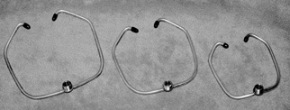

Order over the phone by calling
Davenport Instrument Repair
at 763-569-5180
Order online via PayPal®

The original Keen Clamp® was designed and manufactured in 1983 and remained on the market until 1992. It was dreamed up as an economical way for horn players to become mobile on stage while still being able to use the big mics that they preferred to trust with their full instrument sound.
Despite the Shure Microphone Company's decision to market the Keen Clamps® throughout the world as a way to secure their mini mic to performers' horns, the industry quickly caught on to the mini mic idea and dozens of new clamping concepts appeared. Keen Clamp® left the market to make room for these new mini mic specific methods.
Over the last fifteen or so years horn players and live stage sound engineers, dissatisfied with the mini mic sound, are desiring to use the larger mics again and have been seeking out the original Keen Clamp® to make this happen.
The Keen Clamp® is back and available for purchase in three sizes. The Baritone Clamp fits Bari Saxophones, and Trombones. The Tenor Clamp fits Tenor Saxophones. The Alto Clamp fits Alto Saxophones and Trumpets.

The Keen Clamp® is easy to use. Simply ease the clamp over the instrument bell, keeping the threads above the rim. Screw the mic clip onto the threads and lock in place with the lock ring.